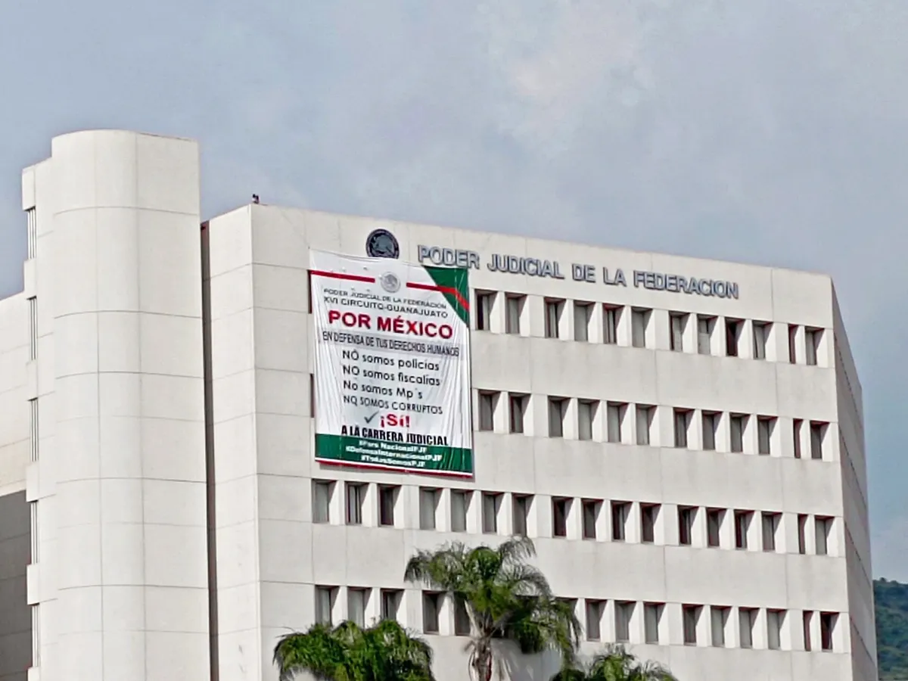
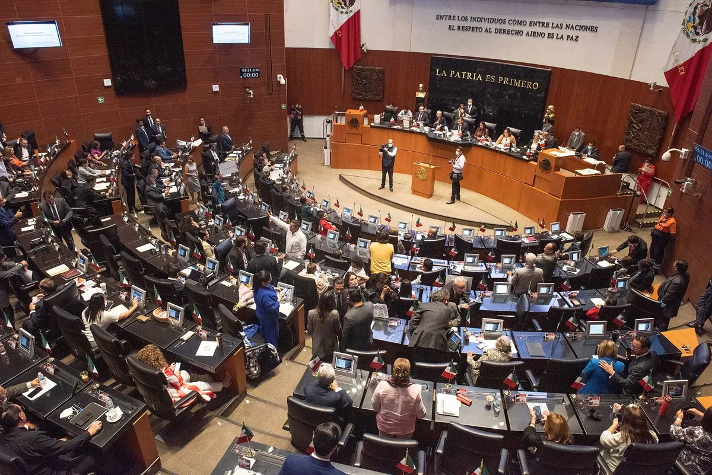

OKpolítico
OKpolíticoPolítica
Esta sección está disponible para tu marca →Opinión | Detienen en Colombia a juez acusado de recibir 2 millones de dólares
La Fiscalía de Estados Unidos acusa al juez federal Luis Benítez Alcántara de recibir dos millones de dólares para liberar a Andrew Clark, según el Departamento de Justicia citado
6 de noviembre de 2026IEEPCO otorgó adjudicaciones directas por más de 190 millones de pesos
Investigaciones de la ASF y la UIF señalan adjudicaciones directas millonarias en el IEEPCO a empresas bajo escrutinio federal. Fuentes: El Universal, El Financiero y Dossier Polít
3 de noviembre de 2026


CFE reporta pérdida neta de 23 mil 310 millones de pesos
La CFE reportó una pérdida neta de 23 mil 310 millones de pesos en el tercer trimestre de 2026 según la BMV, cifra que contrasta con hallazgos de la ASF sobre irregularidades en co
30 de octubre de 2026
Transportistas exigen seguridad; GN señala mal uso de estrategia Balam
Transportistas exigen mayor seguridad en carreteras tras bloqueos nacionales. La Guardia Nacional señaló que el sector no utiliza adecuadamente la estrategia Balam, mientras cifras
29 de octubre de 2026Calculan que la evasión de IVA elevaría las pérdidas por huachicol fiscal
El gobierno federal reportó pérdidas por 61 mil millones de pesos de IEPS por huachicol fiscal en 2025. Sin embargo, estimaciones de especialistas integran la evasión de IVA, lo qu
27 de octubre de 2026Cámara de Diputados aprueba reformas penales y de propiedad industrial
La Cámara de Diputados aprobó penas de hasta cinco años de cárcel por usar identidad gráfica institucional. Mientras Morena señala que combate el fraude y páginas falsas, organizac
22 de octubre de 2026
Expulsan a representación mexicana de magistrados por apoyo a la reforma judicial
La Unión Internacional de Magistrados (UIM) votó la expulsión de la CONATRIB tras su apoyo a la reforma judicial en México. Mientras la representación mexicana defendió el acatamie
20 de octubre de 2026
HR Ratings baja calificación soberana de México por deterioro fiscal y deuda
HR Ratings ajustó la calificación crediticia de México de BBB+ a BBB debido a tensiones fiscales y menores expectativas de crecimiento. La agencia prevé que la deuda pública alcanc
16 de octubre de 2026Trabajadores del IMSS marchan en CDMX: exigen aumento del 10% y abasto de insumos
Miles de trabajadores del IMSS se movilizaron en la CDMX y 17 estados exigiendo un aumento salarial del 10% y denunciando desabasto de insumos. Mientras el Gobierno Federal destaca
14 de octubre de 2026Estados Unidos sanciona a red acusada de financiar campañas políticas para el narco
El Departamento del Tesoro de Estados Unidos sancionó a 15 sujetos vinculados al Cártel del Noreste, señalando presunto financiamiento a campañas políticas en México. En contraste,
13 de octubre de 2026Gobierno de México busca regular contenidos violentos y de odio en plataformas digitales
La presidenta Claudia Sheinbaum presentó un decreto para regular contenidos violentos en redes sociales de forma voluntaria. Mientras el gobierno busca que las empresas retiren mat
9 de octubre de 2026Mauricio Kuri responde a Sheinbaum por academia policial en Querétaro
El gobernador de Querétaro, Mauricio Kuri, respondió a la presidenta Claudia Sheinbaum sobre la academia policial con apoyo de EE. UU., asegurando que se alineará a las directrices
8 de octubre de 2026Ministro en retiro advierte subordinación de la Suprema Corte ante el Estado
El ministro en retiro Javier Laynez advierte riesgos de cooptación en la SCJN. Mientras la presidencia de la Corte defiende su autonomía, la JUFED denuncia acoso disciplinario cont
7 de octubre de 2026Debate en el Congreso por empleo e informalidad en México
Durante su comparecencia en la Cámara de Diputados, el secretario del Trabajo, Marath Bolaños, defendió la política laboral del gobierno federal. No obstante, legisladores de oposi
6 de octubre de 2026
Hacienda niega investigación de UIF contra Amílcar Olán
El secretario de Hacienda, Édgar Amador Zamora, afirmó en el Senado que la UIF no investiga al empresario Amílcar Olán al no recibir requerimientos judiciales. Sin embargo, reporte
6 de octubre de 2026Crimen organizado controla 30% del territorio mexicano
Un estudio publicado por El Imparcial indica que el crimen organizado controla el 30 % del territorio mexicano y solo el 23 % está bajo control estatal, con nueve estados dominados
6 de octubre de 2026
Sheinbaum cuestiona academia policial en Querétaro con apoyo de Estados Unidos
La presidenta Claudia Sheinbaum solicitó explicaciones al gobernador de Querétaro y al embajador de Estados Unidos por la creación de una academia policial sin coordinar con la SRE
5 de octubre de 2026